library(duke)
library(palmerpenguins)
library(ggmosaic)
library(ggplot2)
library(dplyr)4 Package Use
This vignette aims to comprehensively demonstrate the use and functionality of the package duke. duke is fully integrated with the ggplot2 and allows for the creation of Duke official branded visualizations that are color blind friendly.
For this purposes of this vignette, we will use the palmerspenguins package, which provides a simple dataset on Antarctic penguins and their characteristics: penguins (Horst, Hill, and Gorman, n.d.). The dataset has eight variables - some numeric and some categorical - and 344 observations, each representing a unique penguin.
4.1 Scatter Plot - Continuous Color
scatterplot_c <- ggplot(
penguins,
aes(x = bill_length_mm, y = bill_depth_mm)
) +
geom_point(aes(color = body_mass_g)) +
labs(
title = "Bill Length vs. Bill Depth",
x = "Bill Length (mm)", y = "Bill Depth (mm)"
)
scatterplot_c +
scale_duke_continuous() +
theme_duke()scatterplot_c +
geom_point(aes(shape = species)) +
scale_duke_continuous() +
theme_duke()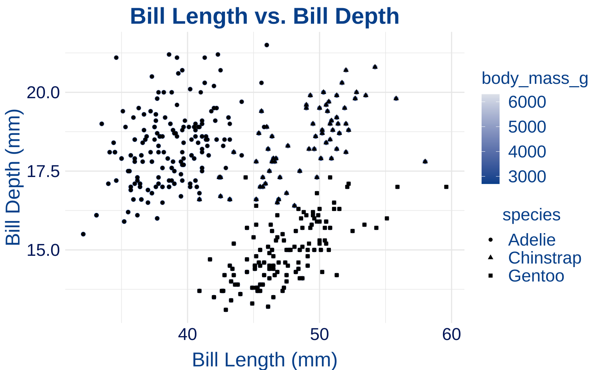
4.2 Scatter Plot - Discrete Color
scatterplot_d <- ggplot(
penguins,
aes(x = bill_length_mm, y = bill_depth_mm, color = species)
) +
geom_point(size = 3) +
labs(
title = "Bill Length vs. Bill Depth",
caption = "(Colors used) \n Duke Royal Blue, Eno, Copper",
x = "Bill Length (mm)",
y = "Bill Depth (mm)"
)
scatterplot_d +
theme_duke() +
scale_duke_color_discrete()
scatterplot_d +
facet_wrap(~species) +
theme_duke() +
scale_duke_color_discrete()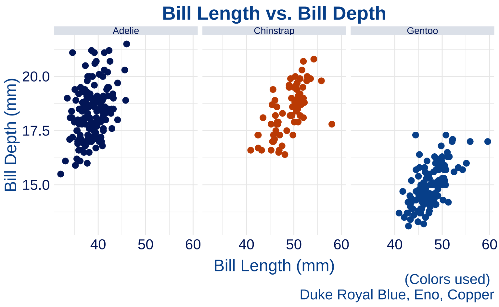
4.3 Bar Plot
barplot <-
ggplot(penguins, aes(x = species, fill = species)) +
geom_bar() +
labs(
title = "Distribution of Penguin Species",
caption = "(Colors from left to right) \n Duke Royal Blue, Duke Navy Blue, Copper",
x = "Species",
y = "Count"
)
barplot +
scale_duke_fill_discrete() +
theme_duke()m_penguins <- penguins %>%
dplyr::filter(sex == "male")
barplot2 <- ggplot(m_penguins, aes(x = sex, fill = sex)) +
geom_bar()
barplot2 +
scale_duke_fill_discrete() +
theme_duke()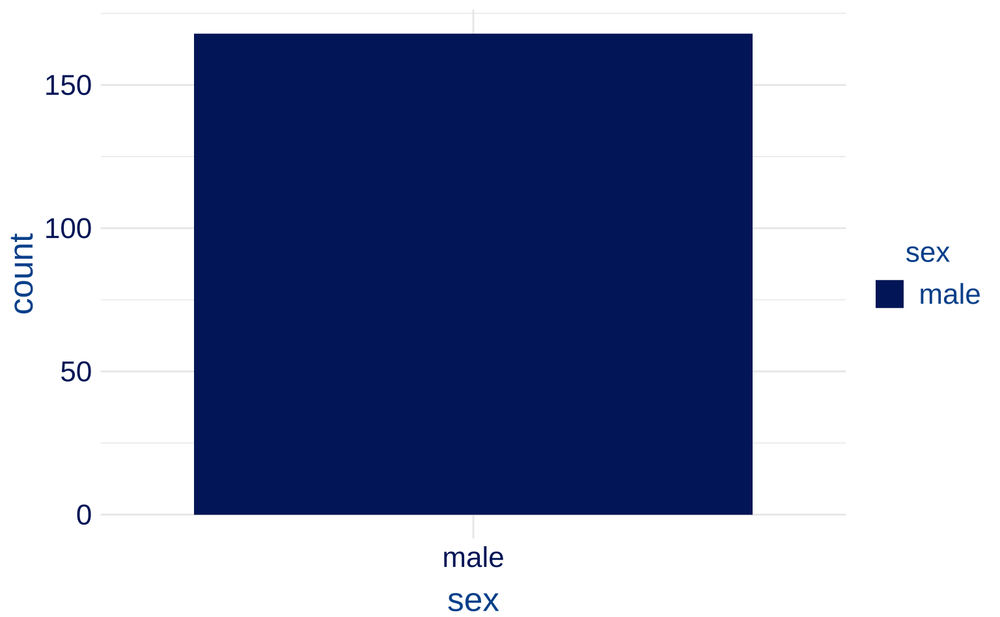
# 8-category plot
barplot8 <- ggplot(students, aes(x = grade, fill = grade)) +
geom_bar()
barplot8 +
scale_duke_fill_discrete() +
theme_duke()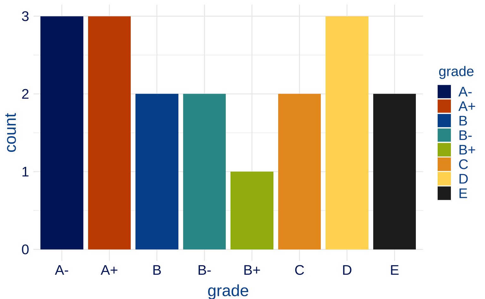
# 7-category plot
barplot7 <- students %>%
slice(-13) %>%
ggplot(aes(x = grade, fill = grade)) +
geom_bar() +
scale_duke_fill_discrete() +
theme_duke()
# 6-category plot
barplot6 <- students %>%
slice(-c(9, 10, 13)) %>%
ggplot(aes(x = grade, fill = grade)) +
geom_bar() +
scale_duke_fill_discrete() +
theme_duke()
# 5-category plot
barplot5 <- students %>%
slice(-c(9, 10, 13, 7, 18)) %>%
ggplot(aes(x = grade, fill = grade)) +
geom_bar() +
scale_duke_fill_discrete() +
theme_duke()
# 4-category plot
barplot4 <- students %>%
slice(-c(9, 10, 13, 7, 18, 4, 8)) %>%
ggplot(aes(x = grade, fill = grade)) +
geom_bar() +
scale_duke_fill_discrete() +
theme_duke()4.4 Histogram
histplot <- ggplot(penguins, aes(body_mass_g)) +
geom_histogram(aes(fill = species), alpha = 0.8) +
labs(title = "Distribution of Penguin Body Mass",
caption = "(Colors used) \n Duke Royal Blue, Duke Navy Blue, Copper",
x = "Body Mass (g)",
y = "Count")
histplot +
scale_duke_fill_discrete() +
theme_duke()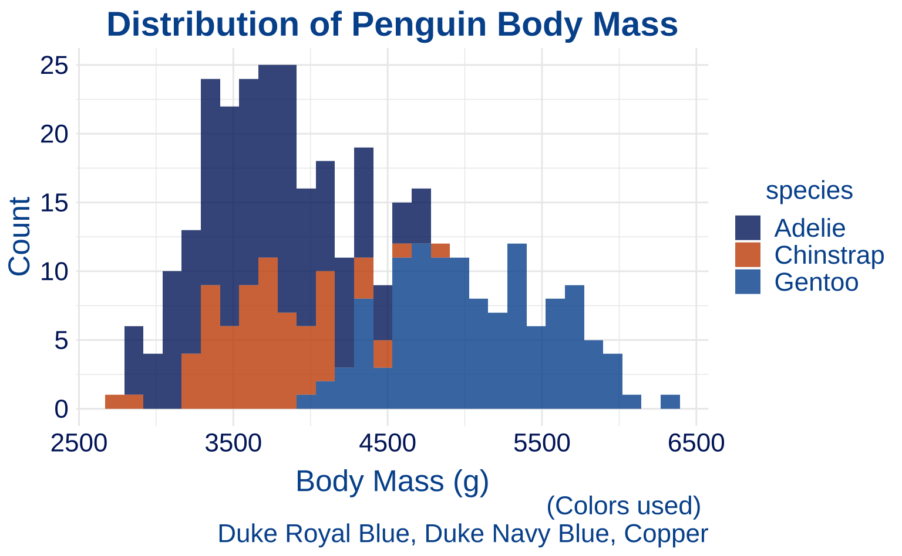
4.5 Box Plot
boxplot <- ggplot(penguins, aes(sex, body_mass_g)) +
geom_boxplot() +
labs(
title = "Comparison of Body Mass By Sex",
x = "Sex",
y = "Body Mass (g)"
)
boxplot +
theme_duke()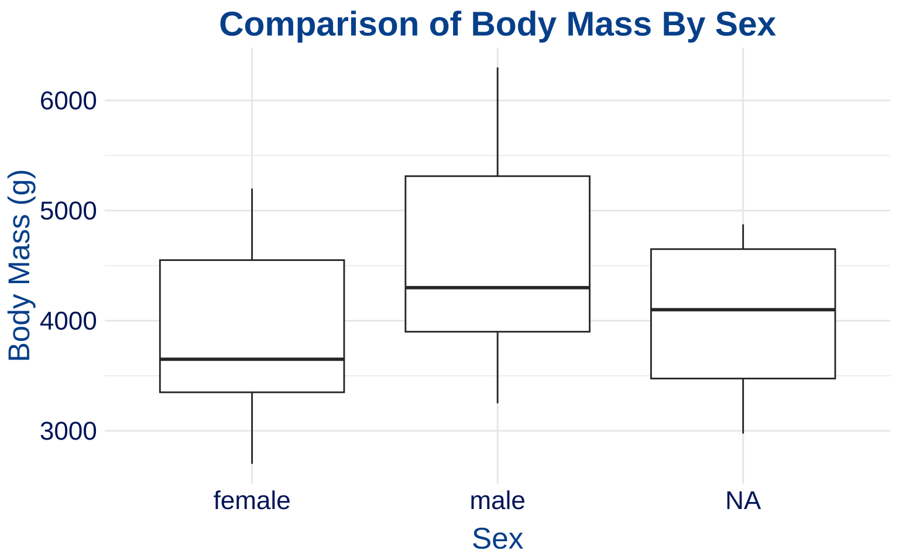
4.6 Density Plot
densityplot <- ggplot(penguins, aes(bill_depth_mm)) +
geom_density(aes(fill = species)) +
labs(
title = "Density of Penguin Bill Depth",
x = "Bill Depth (mm)",
y = "Densiy"
)
densityplot +
scale_duke_fill_discrete() +
theme_duke()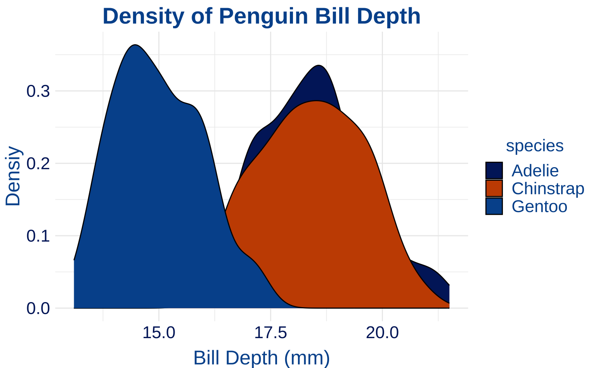
4.7 Jitter Plot - Discrete Color
jitterplot_d <- ggplot(penguins, aes(as.factor(year), body_mass_g)) +
geom_jitter(aes(color = species)) +
labs(
title = "Comparison of Body Mass By Year",
x = "Year",
y = "Body Mass (g)"
)
jitterplot_d +
scale_duke_color_discrete() +
theme_duke()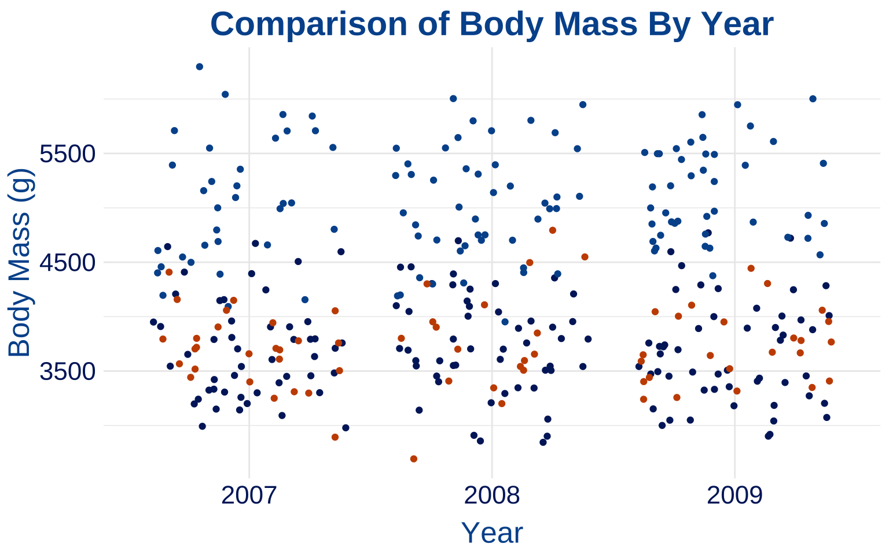
4.8 Jitter Plot - Continuous Color
jitterplot_c <- ggplot(penguins, aes(as.factor(year), body_mass_g)) +
geom_jitter(aes(color = bill_length_mm)) +
labs(
title = "Comparison of Body Mass By Year",
x = "Year",
y = "Body Mass (g)"
)
jitterplot_c +
scale_duke_continuous() +
theme_duke()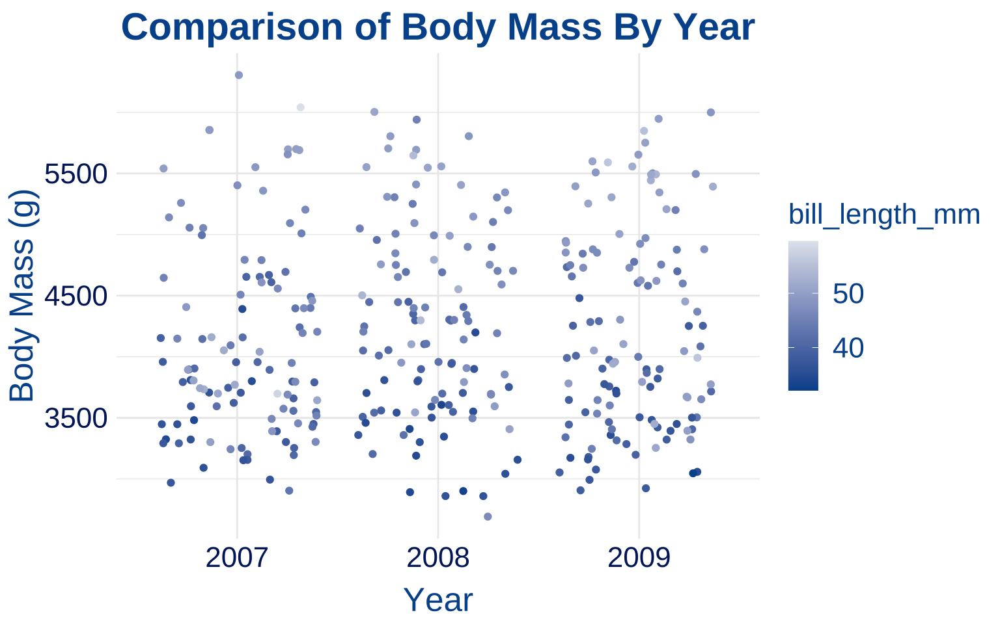
4.9 Mosaic Plot
mosaicplot <- ggplot(data = penguins) +
ggmosaic::geom_mosaic(aes(x = ggmosaic::product(sex, island), fill = sex)) +
labs(
title = "Penguin Sex vs. Island",
x = "Island",
y = "Penguin Sex",
caption = "(Color from top to bottom) \n Granite, Duke Navy Blue, Duke Royal Blue"
)
mosaicplot +
scale_duke_fill_discrete() +
theme_duke()
4.10 Label Plot
labelplot <- ggplot(
penguins,
aes(bill_length_mm, bill_depth_mm,
fill = island
)
) +
geom_label(aes(label = island)) +
labs(
title = "Bill Length/Depth by Island",
x = "Bill Length (mm)",
y = "Bill Depth (mm)"
)
labelplot +
scale_duke_fill_discrete() +
theme_duke()4.11 Quantile Plot
quantileplot <-
ggplot(
penguins,
aes(bill_length_mm, bill_depth_mm, color = species)
) +
geom_quantile() +
labs(title = "Bill Length/Depth Quantiles",
x = "Bill Length (mm)",
y = "Bill Depth (mm)")
quantileplot +
scale_duke_color_discrete() +
theme_duke()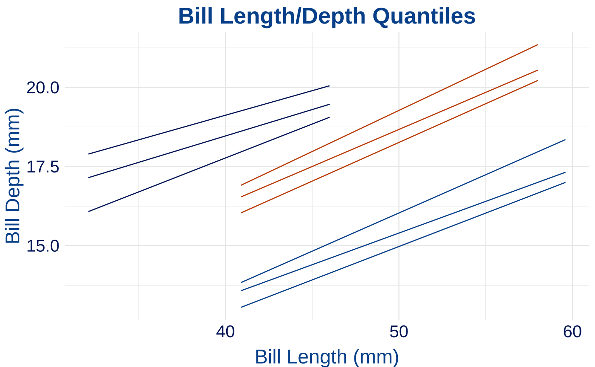
4.12 Area Plot
areaplot <- ggplot(penguins, aes(body_mass_g, fill = species)) +
geom_area(stat = "bin") +
labs(
title = "Area of Body Mass Index",
x = "Body Mass (g)"
)
areaplot +
scale_duke_fill_discrete() +
theme_duke()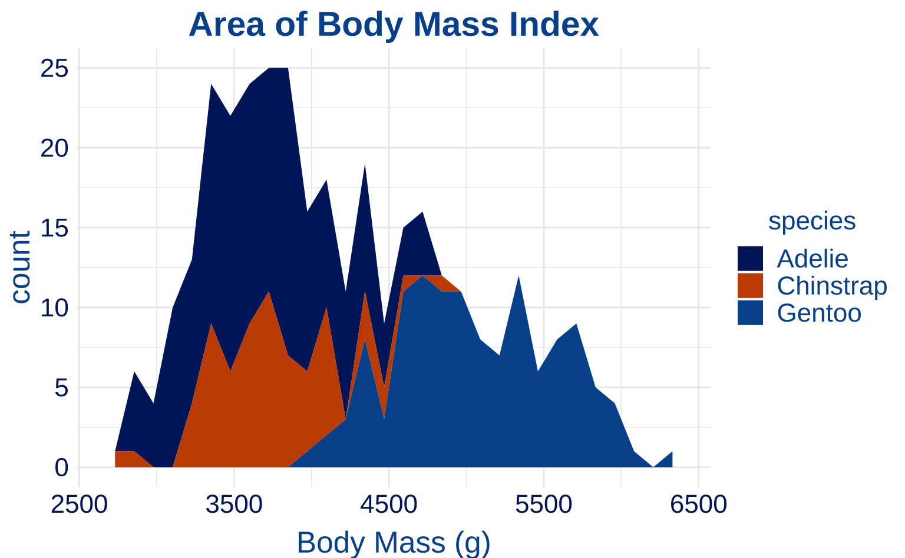
4.13 Dot Plot
dotplot <- ggplot(penguins, aes(body_mass_g)) +
geom_dotplot(aes(fill = species)) +
labs(
title = "Dotplot of Body Mass (g)",
x = "Body Mass (g)"
)
dotplot +
scale_duke_fill_discrete() +
theme_duke()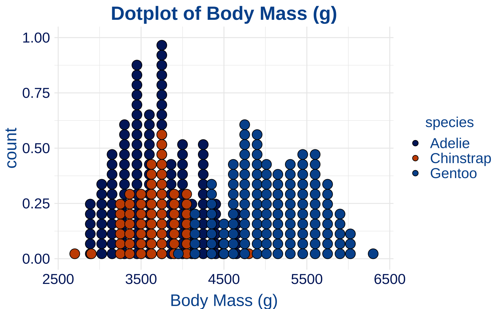
4.14 Frequency Polynomial Plot
freqplot <-
ggplot(penguins, aes(body_mass_g)) +
geom_freqpoly(aes(color = species)) +
labs(title = "Frequency Polynomial Plot of Body Mass (g)",
x = "Body Mass (g)")
freqplot +
scale_duke_color_discrete() +
theme_duke()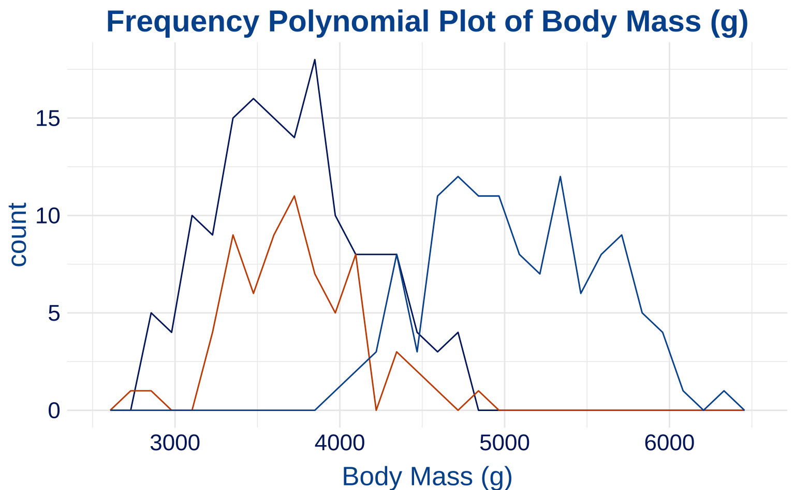
4.15 Column Plot
colplot <- ggplot(penguins, aes(species, body_mass_g, color = species)) +
geom_col() +
labs(
title = "Body Mass (g) By Species",
x = "Species",
y = "Body Mass (g)"
)
colplot +
scale_duke_color_discrete() +
theme_duke()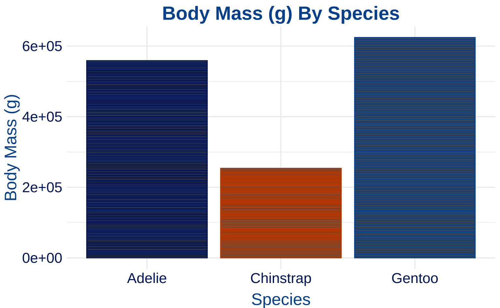
4.16 Violin Plot
violinplot <- ggplot(penguins, aes(species, body_mass_g, fill = species)) +
geom_violin(scale = "area") +
labs(
title = "Body Mass (g) By Species",
x = "Species",
y = "Body Mass (g)"
)
violinplot +
scale_duke_fill_discrete() +
theme_duke()
4.17 Count Plot
countplot <- ggplot(penguins, aes(species, island, color = species)) +
geom_count() +
labs(
title = "Species Count by Island",
x = "Species",
y = "Island"
)
countplot +
scale_duke_color_discrete() +
theme_duke()
4.18 Step Plot
stepplot <- ggplot(
penguins,
aes(as.factor(year), body_mass_g, color = species)
) +
geom_step() +
labs(
itle = "Body Mass (g) By Year",
x = "Year",
y = "Body Mass (g)"
)
stepplot +
scale_duke_color_discrete() +
theme_duke()